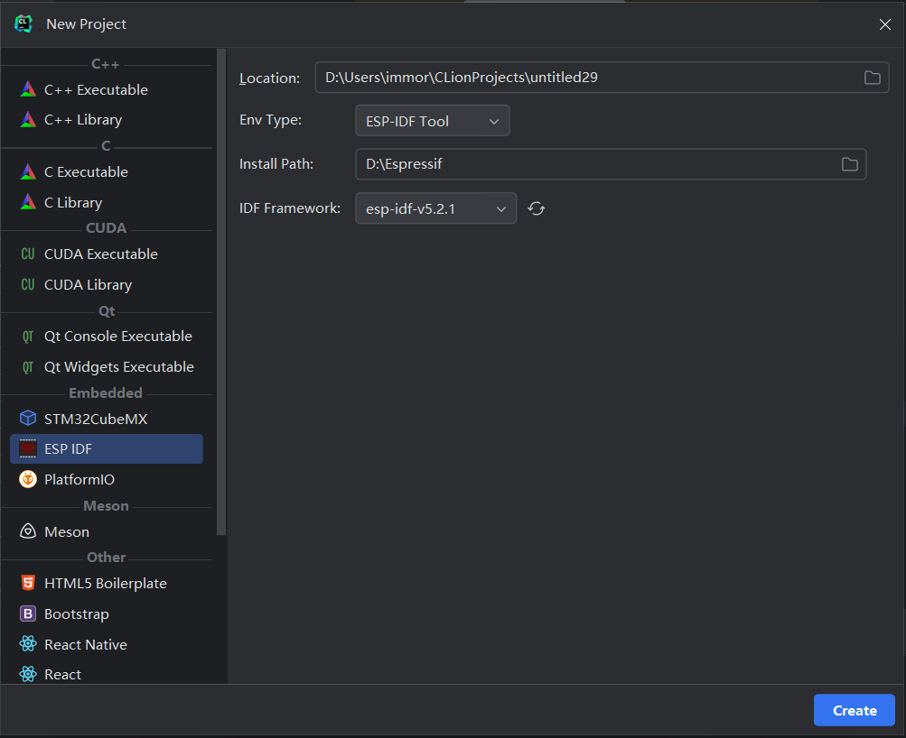
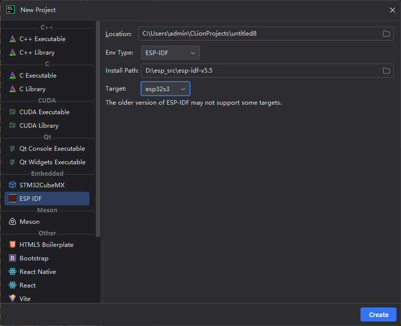
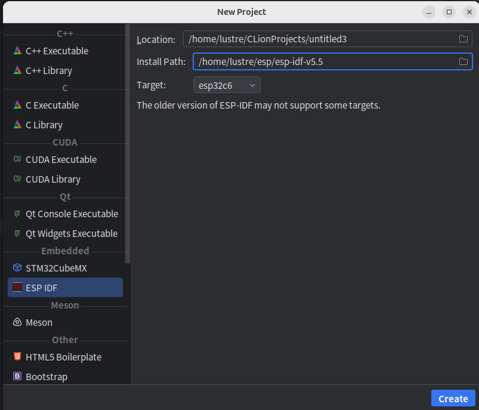
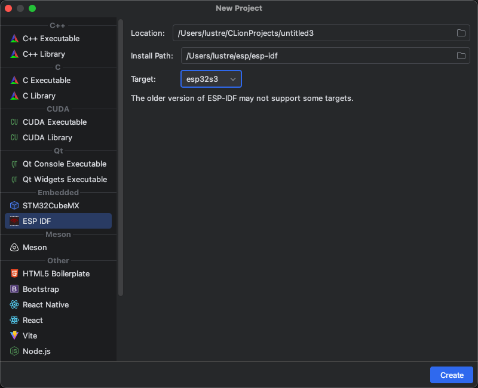
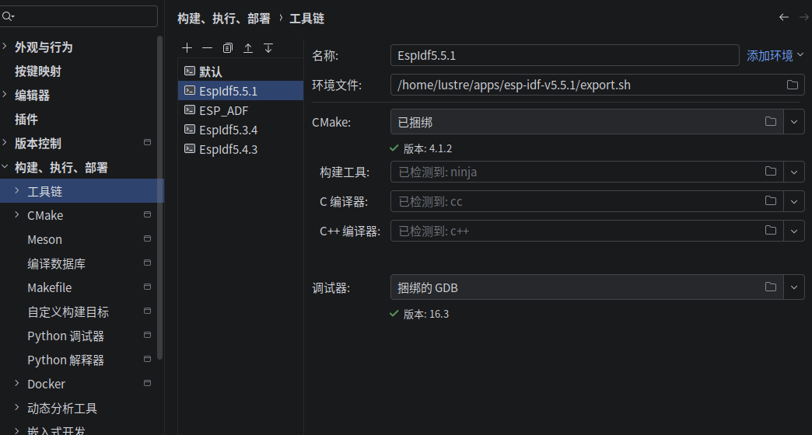

新建项目 关于中国下载站:本篇涉及idf安装方式均可完全走乐鑫在中国下载站以及python组件使用中国国内镜像源。若出现下载问题，请注意 完全使用中国站(乐鑫中国站和python清华源) 这个选项 当然python也可设置其他国内源如阿里源。
首次使用clion注意事项 如果首次使用clion,第一次新建当前项目的时候，会弹出一个选择Toolchain的窗口，这个时候不要选择， 本插件初始化项目的时候会自动新建属于IDF的Toolchain并创建对应cmake profile选中它。 如果出现该弹窗，待Set Target任务执行完成关掉即可。
windows离线ESP-IDF 在该地址 下载对应版本的ESP-IDF
选择一个 Offline Installer(离线安装器) ，无需使用加速器。
下载完成按向导安装，可以勾选附加的驱动。

再选择上一步离线包安装的路径如: D:\Espressif。
选择正确会自己加载已安装的ESP-IDF框架。
然后创建项目即可。
Windows下源码安装 python git需要提前安装，python的版本可能随着idf版本支持度有所不同，比如在测试idf5.5.1的时候使用3.14存在问题使用3.12版本则可以。
目前依赖的python仅仅支持3.10, 3.11, 3.12, 3.13.在其他系统可能3.10也不支持参考idf-im-ui/python版本
克隆代码 在一个没有空格路径下打开cmd执行以下命令(powershell设置环境变量的方式不同)
git clone --recursive https://github.com/espressif/esp-idf.git
以本机运行代理软件http代理场景为例
:: 设置 HTTP 代理
set http_proxy=http://127.0.0.1:7890
:: 设置 HTTPS 代理
set https_proxy=http://127.0.0.1:7890
git clone --recursive https://github.com/espressif/esp-idf.git
以idf5.5为例，将idf5.5的release中附件esp-idf-v5.5.zip的url复制出， github.com 到 dl.espressif.cn/github_assets
得到其乐鑫中国站下载地址如下:
https://dl.espressif.cn/github_assets/espressif/esp-idf/releases/download/v5.5/esp-idf-v5.5.zip
可用浏览器下载，后解压到一个没有空格的目录
切换到一个具体的稳定版本(可选) 例如v5.5标签
cd esp-idf
git checkout v5.5
git submodule update --init --recursive
安装 安装会下载一些东西,根据需要选择后续是否使用镜像站
命令行进入源码目录，然后执行以下操作
set IDF_GITHUB_ASSETS=dl.espressif.com/github_assets
install.bat
set IDF_GITHUB_ASSETS=dl.espressif.cn/github_assets
set PIP_INDEX_URL=https://pypi.tuna.tsinghua.edu.cn/simple
set PIP_TRUSTED_HOST=pypi.tuna.tsinghua.edu.cn
install.bat
新建项目 并将Env Type 选为ESP-IDF

再选择对应的源码路径export.bat和export.ps1所在目录。
设置对应target,然后新建项目。
Linux源码安装 安装具体依赖的组件 需要手动安装一些组件，再使用install脚本。 参考Linux安装具体的组件
以ubuntu为例
sudo apt update
sudo apt-get install git wget flex bison gperf python3 python3-pip python3-venv cmake ninja-build ccache libffi-dev libssl-dev dfu-util libusb-1.0-0
克隆代码
mkdir -p ~/esp
cd ~/esp
git clone --recursive https://github.com/espressif/esp-idf.git
# 很多时候代理软件可能只能在windows和macos上安装，在将代理软件的局域网模式打开，防火墙要运行应用程序过防火墙。
# 然后在linux的终端上设置为其局域网具体地址
mkdir -p ~/esp
cd ~/esp
# 设置 HTTP 代理
export http_proxy=http://192.168.137.1:7890
# 设置 HTTPS 代理
export https_proxy=http://192.168.137.1:7890
git clone --recursive https://github.com/espressif/esp-idf.git
# 以idf5.5为例，将idf5.5的release中附件esp-idf-v5.5.zip的url复制出
# 然后替换`github.com` 到 `dl.espressif.cn/github_assets`
mkdir -p ~/esp
cd ~/esp
wget https://dl.espressif.cn/github_assets/espressif/esp-idf/releases/download/v5.5/esp-idf-v5.5.zip
unzip esp-idf-v5.5.zip
mv esp-idf-v5.5/ esp-idf
切换到一个具体的稳定版本(可选) 例如v5.5标签
cd esp-idf
git checkout v5.5
git submodule update --init --recursive
安装 安装会下载一些东西,根据需要选择后续是否使用镜像站
cd ~/esp/esp-idf
./install.sh
cd ~/esp/esp-idf
export IDF_GITHUB_ASSETS="dl.espressif.com/github_assets"
./install.sh
cd ~/esp/esp-idf
export IDF_GITHUB_ASSETS="dl.espressif.cn/github_assets"
export PIP_INDEX_URL=https://pypi.tuna.tsinghua.edu.cn/simple
export PIP_TRUSTED_HOST=pypi.tuna.tsinghua.edu.cn
./install.sh
新建项目 安装完成之后创建ESP-IDF项目时选择源码路径下export.sh所在的目录。
设置对应target,然后新建项目。

Macos源码安装 安装具体依赖的组件 需要手动安装一些组件。 参考macos安装具体的组件
这里m4使用HomeBrew安装具体组件测试成功, ccache也进行了安装
克隆代码
mkdir -p ~/esp
cd ~/esp
git clone --recursive https://github.com/espressif/esp-idf.git
mkdir -p ~/esp
cd ~/esp
export http_proxy=http://127.0.0.1:7890
export https_proxy=http://127.0.0.1:7890
git clone --recursive https://github.com/espressif/esp-idf.git
以idf5.5为例，将idf5.5的release中附件esp-idf-v5.5.zip的url复制出github.com 到 dl.espressif.cn/github_assets
mkdir -p ~/esp
cd ~/esp
curl -O https://dl.espressif.cn/github_assets/espressif/esp-idf/releases/download/v5.5/esp-idf-v5.5.zip
unzip esp-idf-v5.5.zip
mv esp-idf-v5.5/ esp-idf
切换到一个具体的稳定版本(可选) 例如v5.5标签
cd esp-idf
git checkout v5.5
git submodule update --init --recursive
安装 安装会下载一些东西,根据需要选择后续是否使用镜像站
cd ~/esp/esp-idf
./install.sh
cd ~/esp/esp-idf
export IDF_GITHUB_ASSETS="dl.espressif.com/github_assets"
./install.sh
cd ~/esp/esp-idf
export IDF_GITHUB_ASSETS="dl.espressif.cn/github_assets"
export PIP_INDEX_URL=https://pypi.tuna.tsinghua.edu.cn/simple
export PIP_TRUSTED_HOST=pypi.tuna.tsinghua.edu.cn
./install.sh
安装完成之后创建`ESP-IDF`项目时选择源码路径下`export.sh`所在的目录。
设置对应target,然后新建项目。

生成的Toolchain名称前缀为EspIdfAutoGen ，目前本插件不依赖Toolchain名称，可以重命名。 重命名后，已经配置过的项目需要在cmake profile处重新指定对应名称即可。

21 十二月 2025